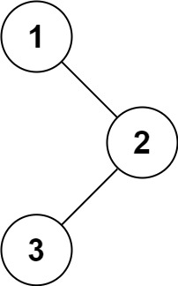

94. 二叉树的中序遍历
本页目录
| 题目信息 | 内容 |
|---|---|
| 难度 | 简单 |
| 核心模式 | 递归 / 栈 / Morris |
| 时间复杂度 | O(n) |
| 空间复杂度 | O(h)，Morris 为 O(1) |
题目与约束
给定一个二叉树的根节点 root ，返回 它的 中序 遍历 。
示例 1：

输入：root = [1,null,2,3]
输出：[1,3,2]
示例 2：
输入：root = []
输出：[]
示例 3：
输入：root = [1]
输出：[1]
提示：
- 树中节点数目在范围
[0, 100]内 -100 <= Node.val <= 100
进阶: 递归算法很简单，你可以通过迭代算法完成吗？
核心不变量
中序顺序是左—根—右，BST 中对应升序。
解法 1：迭代栈版
思路推导
-
直觉与痛点（递归法）：
递归的思想非常自然：定义一个函数，先递归调用左孩子，然后把自己的值塞进结果集，最后递归调用右孩子。
痛点：递归隐藏了底层的调用栈。当树非常深时，极易引发“栈溢出（StackOverflow）”。面试官让你写迭代，就是为了考察你是否真正理解了系统栈是如何工作的。
-
破局思路（迭代法：手动模拟系统栈）：
我们要自己造一个栈（Stack）来代替系统的函数调用栈。
中序遍历的难点在于：我们最先遇到的节点是根节点，但我们不能最先处理它。我们必须把它“存”起来，然后一直往左走，直到走到尽头。
-
逻辑推演（“撞南墙回头”战术）：
- 准备一个栈
stack，一个游标指针curr指向root。 - 往左走到黑：只要
curr不为空，我们就把它压入栈中（留着以后回头看），然后一直往左走curr = curr.left。 - 撞南墙回头：当
curr变成null时，说明左边没路了。此时从栈顶弹出一个节点。这个节点就是当前“最左下角”的节点（也就是该被处理的节点）。把它加入结果集。 - 向右拐：处理完当前节点后，我们去看看它的右孩子
curr = poppedNode.right。 - 循环往复：直到栈为空，且游标也为空。
Java 实现（满分迭代版）
- 准备一个栈
import java.util.ArrayList;
import java.util.Deque;
import java.util.LinkedList;
import java.util.List;
/**
* Definition for a binary tree node.
* public class TreeNode {
* int val;
* TreeNode left;
* TreeNode right;
* TreeNode() {}
* TreeNode(int val) { this.val = val; }
* TreeNode(int val, TreeNode left, TreeNode right) {
* this.val = val;
* this.left = left;
* this.right = right;
* }
* }
*/
class Solution {
public List<Integer> inorderTraversal(TreeNode root) {
List<Integer> res = new ArrayList<>();
// 在 Java 中，推荐使用 Deque 作为栈来使用，比传统的 Stack 类更高效
Deque<TreeNode> stack = new LinkedList<>();
TreeNode curr = root;
// 核心循环：只要还有节点没访问到（curr != null），或者栈里还有节点等着回头访问（!stack.isEmpty()）
while (curr != null || !stack.isEmpty()) {
// 1. 顺着左边一直往下走，沿途节点全部压栈
while (curr != null) {
stack.push(curr);
curr = curr.left;
}
// 2. 走到尽头（撞南墙）了，从栈里弹出一个节点
curr = stack.pop();
// 3. 【中】将当前节点的值加入结果集
res.add(curr.val);
// 4. 【右】转向该节点的右子树，准备下一轮的探险
curr = curr.right;
}
return res;
}
}
复杂度
- 时间复杂度：O(N)。无论是递归还是迭代，树中的每个节点都会且仅会被访问一次（进栈一次出栈一次）。
- 空间复杂度：O(H)，其中 H 是树的高度。在最坏情况下（树退化成一条向左的链表），栈里会塞满所有的节点，空间复杂度为 O(N)；平均情况下（平衡二叉树），空间复杂度为 O(log N)。
易错点与扩展（进阶的细节）
- 踩坑警告：为什么
while的条件是curr != null || !stack.isEmpty()？ - 很多新手只写了!stack.isEmpty()。想象一下，当根节点刚刚弹出并被处理，且此时栈为空时。如果你转向了根节点的右子树（curr = curr.right，此时curr不为空），循环却因为栈为空而提前终止了！整个右子树会惨遭丢失。 - 条件解析：curr != null代表“还有未探索的新领地”；!stack.isEmpty()代表“还有没处理完的旧节点”。两者满足其一，遍历就不能停！ - 超级进阶拷问：“你能用 O(1) 的空间复杂度完成中序遍历吗？”
- 如果你用迭代法征服了面试官，他可能会抛出这个终极 Boss 问题。
- 满分抢答：可以！使用 Morris 遍历算法。
- 思路简述：利用树中大量空闲的叶子节点右指针（
right）。在每次走向左子树前，先找到当前节点在左子树里的“前驱节点”，把前驱节点的right强行指向当前节点，作为“回程机票”。这样就不需要用栈来记录回去的路了。遍历完后再把指针恢复原样。这也是极其优雅的 O(1) 空间神技。
解法 2：递归版
递归法是二叉树最符合直觉的解法。二叉树本身的定义就是递归的（一棵树由根节点和两棵子树组成）。
思路推导
“左 -> 中 -> 右”。要想遍历当前树，先去遍历它的左子树，然后记录当前节点，再去遍历它的右子树。至于子树怎么遍历？交给递归函数自己去套娃就行了。
Java 实现
class Solution {
public List<Integer> inorderTraversal(TreeNode root) {
List<Integer> res = new ArrayList<>();
dfs(root, res);
return res;
}
// 辅助的深度优先搜索（DFS）函数
private void dfs(TreeNode node, List<Integer> res) {
// 递归的终止条件：遇到空节点，说明撞南墙了，直接返回上一层
if (node == null) {
return;
}
// 1. 【左】：一条路走到黑，先遍历左子树
dfs(node.left, res);
// 2. 【中】：左边都搞定了，记录当前节点的值
res.add(node.val);
// 3. 【右】：再去遍历右子树
dfs(node.right, res);
}
}
复杂度
- 时间复杂度：O(N)。每个节点被访问一次。
- 空间复杂度：O(H)。H 是树的高度。这是由于系统自动维护了函数调用栈。
我们来把「二叉树中序遍历（递归版）」拆得明明白白，从定义到代码、再到每一步递归过程，讲得清清楚楚，保证你一看就懂。
我们用一棵更直观的树来演示，一步步看递归是怎么执行的：
1
/ \
2 3
/ \
4 5
中序遍历的预期结果：[4, 2, 5, 1, 3]
🔁 递归执行流程（从根节点 1 开始）
-
调用
dfs(1)- 节点不为空，先执行
dfs(1.left)→ 也就是dfs(2)
- 节点不为空，先执行
-
调用
dfs(2)- 节点不为空，先执行
dfs(2.left)→ 也就是dfs(4)
- 节点不为空，先执行
-
调用
dfs(4)- 节点不为空，先执行
dfs(4.left)→dfs(null) dfs(null)触发终止条件，直接返回- 访问当前节点：把
4加入结果列表 →res = [4] - 执行
dfs(4.right)→dfs(null)，返回 dfs(4)执行完毕，回到dfs(2)
- 节点不为空，先执行
-
回到
dfs(2)，执行访问节点：把2加入结果列表 →res = [4, 2]- 执行
dfs(2.right)→dfs(5)
- 执行
-
调用
dfs(5)- 节点不为空，先执行
dfs(5.left)→dfs(null)，返回 - 访问当前节点：把
5加入结果列表 →res = [4, 2, 5] - 执行
dfs(5.right)→dfs(null)，返回 dfs(5)执行完毕，回到dfs(2)
- 节点不为空，先执行
-
dfs(2)执行完毕，回到dfs(1)- 访问当前节点：把
1加入结果列表 →res = [4, 2, 5, 1] - 执行
dfs(1.right)→dfs(3)
- 访问当前节点：把
-
调用
dfs(3)- 节点不为空，先执行
dfs(3.left)→dfs(null)，返回 - 访问当前节点：把
3加入结果列表 →res = [4, 2, 5, 1, 3] - 执行
dfs(3.right)→dfs(null)，返回 dfs(3)执行完毕，回到dfs(1)
- 节点不为空，先执行
-
dfs(1)执行完毕，递归结束，返回结果列表。
解法 3：Morris O(1) 空间版
这是计算机科学史上极其惊艳的一个算法，由 J. H. Morris 在 1979 年提出。
它解决了一个世纪难题：在不用栈的情况下，走到树的底层后，怎么找回上层的路？
思路推导
树底层的叶子节点，它们的 left 和 right 指针都是空的，白白浪费了。
Morris 算法极其鸡贼地利用了这些空闲的 right 指针：
在走向左子树之前，先找到左子树的最右侧节点（也就是当前节点在遍历顺序里的“前驱节点”），把它的 right 指针强行连到当前节点上，当做一条“回程的传送门（线索）”。
等我们通过这条线索传送回来后，再把指针断开，恢复原样！
- 逻辑推演（三大铁律）：
设当前游标为 curr。
- 如果没有左孩子：那太好了，直接记录
curr.val，然后往右走（curr = curr.right）。 - 如果有左孩子：先找前驱节点（左子树里一直往右走到底的那个节点
predecessor）。- 情况 A（传送门还没建）：如果
predecessor.right是空的，说明我们是第一次来到这。建传送门：predecessor.right = curr，然后安心往左走（curr = curr.left）。 - 情况 B（传送门已经建好了）：如果
predecessor.right指向了curr，说明我们是顺着传送门回来的，左子树已经逛完了！拆传送门：predecessor.right = null，记录curr.val，然后往右走（curr = curr.right）。
- 情况 A（传送门还没建）：如果
Java 实现
class Solution {
public List<Integer> inorderTraversal(TreeNode root) {
List<Integer> res = new ArrayList<>();
TreeNode curr = root;
TreeNode predecessor = null;
while (curr != null) {
if (curr.left == null) {
// 铁律 1：没有左孩子，说明该自己出场了，记录后往右走
res.add(curr.val);
curr = curr.right;
} else {
// 有左孩子，先找左子树里的“最右下角”节点（前驱节点）
predecessor = curr.left;
// 一直往右走，注意不能跨过我们自己建的传送门
while (predecessor.right != null && predecessor.right != curr) {
predecessor = predecessor.right;
}
if (predecessor.right == null) {
// 铁律 2 A：第一次来，建传送门，然后往左走
predecessor.right = curr;
curr = curr.left;
} else {
// 铁律 2 B：顺着传送门回来的，拆掉传送门，记录自己，往右走
predecessor.right = null;
res.add(curr.val);
curr = curr.right;
}
}
}
return res;
}
}
复杂度
- 时间复杂度：O(N)。虽然找前驱节点有一个内层
while循环，但如果画图你会发现，整棵树里的每一条边最多只会被走 3 次（下去一次，建线索走一次，拆线索走一次）。3N 依然是 O(N) 级别。 - 空间复杂度：O(1)！这就是魔法的威力，没有递归栈，没有手动栈，全程只用了两个游标指针，真正的原地修改与复原！